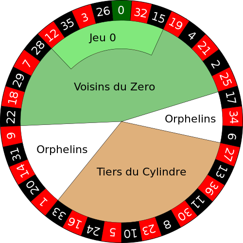

Aufgabe 1: Roulette
Erstelle ein Programm, das ein vereinfachtes Roulette als Konsolenprogramm simuliert.

(CC BY-SA 3.0 File:European roulette wheel.svg, von Betzaar, wikipedia.org)
Insgesamt sind auf dem Kessel 37 Zahlen: 0 bis 36.
Aufgabe 1a
Arbeite in der Datei roulette1a.py.
-
Der Benutzer wird nach seinem Namen gefragt.
-
Der Benutzer wird gefragt, ob er wirklich Roulette spielen möchte; wenn nicht, dann wird er höflich verabschiedet.
-
Der Benutzer wird gefragt, auf welche Zahl oder Zahlenbereich er setzen möchte:
-
"Rot oder Schwarz": Wenn man richtig liegt, wird der Einsatz wird verdoppelt.
-
"Gerade oder ungerade": Wenn man richtig liegt, wird der Einsatz wird verdoppelt.
-
"Plein", d. h. es wird auf eine der 37 Zahlen gesetzt: Wenn man richtig liegt, wird der Einsatz ver-36-facht.
-
-
Der Benutzer wird gefragt, wieviel Geldeinheiten er setzen möchte.
-
Das Rad wird gedreht, also eine Zufallszahl ermittelt.
-
Das Ergebnis des Laufs wird ausgegeben und dem Benutzer mitgeteilt, ob und wieviel er gewonnen hat.
-
Ende des Programms.
Aufgabe 1b
Kopiere das Programm aus der vorigen Aufgabe in eine neue Datei: roulette1b.py.
Erweitere das Programm so, dass das Programm erst endet, wenn der Benutzer nicht mehr weiterspielen möchte. Außerdem sollen alle ungültigen Benutzereingaben nicht akzeptiert werden.
Aufgabe 1c
Kopiere das Programm aus der vorigen Aufgabe in eine neue Datei: roulette1c.py.
Das Programm soll sich merken wieviel der Benutzer eingesetzt hat und wieviel er gewonnen hat.
Wenn der Benutzer mit mehr als 1000 Einheiten im Minus ist, dann soll das Programm einen Hinweis ausgeben, ob er schon die günstigen Kreditkondition der Spielbank kennt.
Bei mehr als 2000 Einheiten im Minus, soll das Programm vorschlagen, einen Arzt aufzusuchen, der ihm hilft sich von der Spielsucht zu befreien.
Aufgabe 2: Text-Graphik
Zeige dem Benutzer auf der Konsole wie die Roulettezahlen angeordnet sind, damit er sich ein Bild davon machen kann, auf was er da eigentlich sein Geld setzt.
Gehe dabei schrittweise vor:
1) Erstelle ein neues Pythonprogramm in der Datei roulette2-kessel.py.
2) Mache dich mit dem curses-Modul vertraut, indem du folgendes ausprobierst.
TODO python source ex-curses1.py